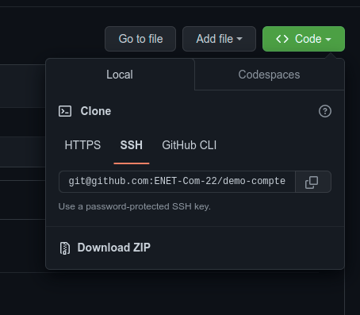

Nous allons utiliser git dans vos projets et GitHub comme espace d'hébergement pour ces derniers. Donc vous devez installer git (https://git-scm.com/) sur vos machines et avoir un compte GitHub (https://github.com/join)
Je vous invite à profiter de l'opportunité que l'Université de Sfax fait partie du programme d'éducation de GitHub (https://education.github.com/) et de s'inscrire au pack "Student Developer".

Le pack étudiant fournit de nombreux outils professionnels gratuitement. Vous n'avez pas besoin de créer un nouveau compte GitHub, vous pouvez simplement ajouter l'adresse e-mail de votre institut à votre compte personnel puis vous inscrire au pack. (pour vérifier que vous êtes étudiant, vous devez fournir une photo de votre carte d'étudiant):
https://education.github.com/pack
L'outil de contrôle de version git peut être géré par les lignes de commandes (https://bit.ly/3Sma31d) ou bien par des clients graphiques (GUI) comme:
- Gitkraken (https://www.gitkraken.com/download)
- SmartGit (https://www.syntevo.com/smartgit/download/)
- GitHub Desktop (https://desktop.github.com/)
Dans cette étape, vous allez préparer vos espaces de travail à fin d'utiliser Git dans vos projets et les publier sur GitHub.
1. Installer l'outil Git
Installer Git sur Windows
- Téléchargez le dernier installateur Git pour Windows.
- Lorsque vous avez démarré le programme d'installation avec succès, vous devriez voir l'écran de l'assistant de configuration de Git. Suivez les invites Suivant et Terminer pour terminer l'installation. Les options par défaut sont assez sensibles pour la plupart des utilisateurs.
- Ouvrez une invite de commande (ou Git Bash si, lors de l'installation, vous avez choisi de ne pas utiliser Git à partir de l'invite de commande Windows).
- Exécutez les commandes suivantes pour configurer votre nom d'utilisateur et votre adresse e-mail Git à l'aide des commandes suivantes, en remplaçant le nom de Khalil par le vôtre. Ces détails seront associés à tous les commits que vous créez :
$ git config --global user.name "Khalil Hammami"
$ git config --global user.email "khalil.hammami@enetcom.usf.tn"Installer Git sur Linux
Debian / Ubuntu (apt-get)
Les packages Git sont disponibles via apt :
- Depuis votre shell, installez Git en utilisant
apt-get:
$ sudo apt-get update
$ sudo apt-get install git- Vérifiez que l'installation a réussi en tapant
git --version:
$ git --versiongit version 2.38.0
- Configurez votre nom d'utilisateur et votre adresse e-mail Git à l'aide des commandes suivantes, en remplaçant le nom de Khalil par le vôtre. Ces détails seront associés à tous les commits que vous créez :
$ git config --global user.name "Khalil Hammami"
$ git config --global user.email "khalil.hammami@enetcom.usf.tn"2. Connecter à/Créer un Compte Github
Pour pouvoir soumettre votre travail via Github Classroom, vous devez avoir un compte GitHub. pour créer un compte veuillez suivre ce lien: https://github.com/join
3. Se connecter à GitHub en SSH
3.1. À propos de SSH
En utilisant le protocole SSH, vous pouvez vous connecter et vous authentifier auprès de serveurs et services distants. Avec les clés SSH, vous pouvez vous connecter à GitHub sans fournir votre nom d'utilisateur et votre jeton d'accès personnel à chaque visite. Vous pouvez également utiliser une clé SSH pour signer des commits.
Vous pouvez accéder et écrire des données dans des dépôts sur GitHub.com en utilisant SSH (Secure Shell Protocol). Lorsque vous vous connectez via SSH, vous vous authentifiez à l'aide d'un fichier de clé privée sur votre ordinateur local.
Lorsque vous configurez SSH, vous devrez générer une nouvelle clé SSH privée et l'ajouter à l'agent SSH. Vous devez également ajouter la clé SSH publique à votre compte sur GitHub avant d'utiliser la clé pour vous authentifier ou signer des commits.
3.2. Générer une nouvelle clé SSH
Vous pouvez générer une nouvelle clé SSH sur votre ordinateur local. Après avoir généré la clé, vous pouvez ajouter la clé à votre compte sur GitHub.com pour activer l'authentification pour les opérations Git via SSH.
- Sous Linux: Ouvrez le terminal.
Sous Windows: Ouvrez Git Bash - Collez le texte ci-dessous, en le remplaçant par votre adresse e-mail GitHub.
$ ssh-keygen -t ed25519 -C "your_email@example.com"Cela crée une nouvelle clé SSH, en utilisant l'e-mail fourni comme étiquette.
> Generating public/private ALGORITHM key pair.
- Lorsque vous êtes invité à "Enter a file in which to save the key", appuyez sur Entrée. Ceci accepte l'emplacement de fichier par défaut.
> Enter a file in which to save the key (/home/YOU/.ssh/ALGORITHM):[Press enter]
- À l'invite, saisissez une phrase de passe sécurisée. (une sorte de mot de passe pour sécuriser votre clé, peut être vide)
> Enter passphrase (empty for no passphrase): [Type a passphrase] > Enter same passphrase again: [Type passphrase again]
3.3. Ajouter votre clé SSH à l'agent ssh
Avant d'ajouter une nouvelle clé SSH à l'agent ssh pour gérer vos clés, vous devez avoir vérifié les clés SSH existantes et généré une nouvelle clé SSH.
- Démarrez l'agent ssh en arrière-plan.
$ eval "$(ssh-agent -s)"> Agent pid 59566
- Ajoutez votre clé privée SSH au ssh-agent. Si vous avez créé votre clé avec un nom différent, ou si vous ajoutez une clé existante qui porte un nom différent, remplacez id_ed25519 dans la commande par le nom de votre fichier de clé privée.
$ ssh-add ~/.ssh/id_ed25519- Ajoutez la clé SSH à votre compte sur GitHub.
3.4. Ajouter la nouvelle clé SSH à votre compte GitHub
- Copiez la clé publique SSH dans votre presse-papiers.
Si votre fichier de clé publique SSH a un nom différent de celui de l'exemple de code, modifiez le nom du fichier pour qu'il corresponde à votre configuration actuelle. Lorsque vous copiez votre clé, n'ajoutez pas de nouvelles lignes ou d'espaces.
$ cat ~/.ssh/id_ed25519.pub
# Sélectionnez ensuite et copiez le contenu du fichier id_ed25519.pub
# affiché dans le terminal dans votre presse-papiers- Dans le coin supérieur droit de n'importe quelle page de GitHub, cliquez sur votre photo de profil, puis sur "Settings".
- Dans la section "Access" de la barre latérale, cliquez sur "SSH and GPG keys".
- Cliquez sur New SSH key ou sur Add SSH key.
- Dans le champ « Title », ajoutez un libellé descriptif pour la nouvelle clé. Par exemple, si vous utilisez un ordinateur portable personnel, vous pouvez appeler cette clé "Mon PC".
- Sélectionnez "Authentication key" comme type de clé.
- Collez votre clé dans le champ "Key".

- Finalement, Cliquez sur Add SSH key.
Pour compléter le travail à faire de chaque TP, vous allez recevoir par mail, à traver le plateforme de l'ecole, un lien vers la tâche affecté pour vous ressemblant à ceci:
https://classroom.github.com/a/wVf4TcEf
- Ouvrir le lien.
- Autoriser l'application GitHub Classroom à se connecter à votre compte github.

- Sélectionner votre nom dans la liste, si votre nom n'est pas sur la liste des étudiants cliquer sur "Skip to the next step".

- Accepter la tâche.

- Un dépôt sera créé automatiquement pour vous sous le nom indiqué dans la capture d'écran précédente (surligné en bleu). le nom du dépôt sera généré de la façon suivante:
[nom de la tâche]+[votre nom utilisateur de GitHub]
Si la page n'affiche pas le lien de votre dépot github, recharger la page (F5)
- Maintenant, vous avez votre dépôt distant où vous allez soumettre votre travail
Après avoir obtenu le lien de votre dépôt GitHub, vous pouvez commencer à faire vos devoirs en clonant le dépôt sur votre machine locale.
- Cloner votre dépôt Github sur votre machine en utilisant SSH

** N'oubliez pas de remplacer le lien par le votre.
$ git clone git@github.com:ENET-Com-22/demo-compte-rendu-tp-11-khammami.git
- Avant de commencer, créez une nouvelle branche git nommée "dev" et basculez vers celle-ci.
$ cd demo-compte-rendu-tp-11-khammami $ git branch // si la branche "dev" n'existe pas $ git checkout -b dev ou // si la branche "dev" existe $ git checkout dev # Pour vérifier la liste des branches et votre branche actuelle $ git branch
- Créez un dossier nommé "application" où vous allez placer votre application dedans
$ mkdir application
- Vous alliez suivre l'énoncé du fichier "
README.md" (travail à faire) à fin de faire votre compte rendu. L'application demandé doit être sous le dossier "application" (assurez-vous qu'il n'y a pas de dossier ".git" sous le dossier "application") et vous pouvez editer le ficherREADME.mdavec Visual Studio Code pour répondre aux questions en mettant "x" entre "[ ]"

- Une fois que vous avez terminé, vous devez ajouter et enregistrer votre travail dans votre dépôt local avec un commit. (répétez ces instructions après chaque modification ou changement dans votre dépôt Git local)
$ git add --all ou $ git add . $ git commit -m 'A message to describe the changes'
- Jusqu'à présent, vous n'avez pas encore envoyé votre travail, tout est fait localement, pour envoyer votre travail, il vous suffit de pousser vos commits locaux vers votre dépôt distant et c'est tout.
$ git push origin dev